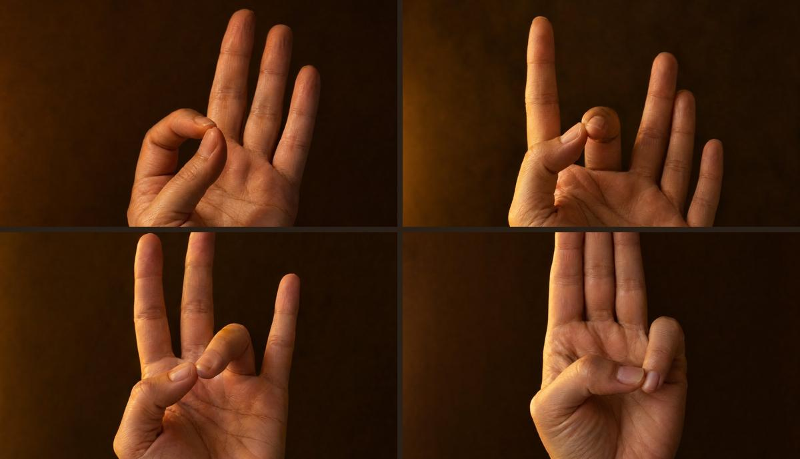

«Са - бесконечность, начало. Та - жизнь. На - смерть и перемена. Ма - перерождение. Это круг творения»
Для чего её поют
- Сменить привычку*
- Остановить поток мыслей
- Расслабиться за несколько минут
- Равновесие ума
- Эмоциональное равновесие*
- Уходят страх и неуверенность
- При стрессе по 11 минут в день*
- Катализатор перемен*
- Отпустить бывшего партнёра*
- Достаток, счастье, находчивость
* по изданиям 3HO, Сикх Дхармы и kundaliniyoga.org, в лекциях Йоги Бхаджана не найдено
Четыре касания

Шаги
Заболела голова: веди звук буквой L, из макушки в точку между бровей. Ум убегает в тишине: вернись в шёпот или голос. Могут всплыть картинки прошлого и чувства, в традиции это часть очищения
Канон KRI, Kirtan Kriya · короткий вариант по Library of Teachings · адаптация: глаза закрыты
Как не сбиться
- В традиции говорят: 40 дней подряд, чтобы отпустить старую привычку, 90, чтобы закрепить новую. Пропустила день, начни счёт заново
- Начни с 11 минут в той же пропорции, что в шагах выше. Одиннадцать минут каждый день дадут больше, чем 31 через раз
- Одно и то же время каждый день. Сразу после пробуждения - самый надёжный вариант
- Отмечай дни на бумаге: видимый счёт держит сильнее намерения
Прежде чем начать
Если у тебя сейчас есть что-то из этого, сначала поговори с врачом. Пока пой мягко: без толчков пупком и задержек, руки на коленях
- эпилепсия или судорожные приступы
- беременность
- операция за последние 6 месяцев
- серьёзные заболевания сердца, инсульт или инфаркт в прошлом
- высокое давление, которое не контролируется лекарствами
- психиатрический диагноз в стадии обострения или госпитализация в психиатрический стационар за последний год
- мысли о самоповреждении
Если бывают панические атаки, задержки дыхания пропускай и начни с мягкого пения на 3 минуты
В дни месячных пой мягко, без толчков пупком. Задержки делай короткими или пропускай
Практика не лечит и не заменяет врача. Если сомневаешься, лучше пропустить день
Когда остановиться
Можно продолжать мягче. Слёзы, раздражение, усталость, сонливость, лёгкое головокружение, всплывают воспоминания. Пой тише, дыши спокойнее, сделай медитацию короче
Остановись сегодня. Сильная тревога, паническая атака, ощущение, что не хватает воздуха. Прекрати, сядь удобно, дыши медленно: вдох на четыре счёта, выдох на восемь. Завтра вернёшься мягче
Прекрати практику и обратись к врачу. Галлюцинации, судороги, боль в груди, обморок, мысли о том, чтобы причинить себе вред. Не возвращайся к практикам, пока не поговоришь с врачом. При острой ситуации звони 112 или 103. Если тяжело на душе и нужно поговорить: телефон доверия для взрослых 8-800-333-44-34, экстренная психологическая помощь МЧС +7 495 989-50-50
Ещё 20 мантр под твои дни
Са Та На Ма - одна из 21 мантры моего гайда. Остальные собраны по ситуациям: начать день, тревога и страх, нет сил, застряла, деньги и будущее, вернуться к себе, сердце и опора. У каждой так же: слова и перевод, для чего её поют, поза и руки на фото, шаги
Посмотреть гайд
Я Ксения
Преподаю кундалини-йогу и веду занятия один на один
Короткие практики на каждый день в моём Telegram-канале «Ксения Новосёлова | Кундалини»